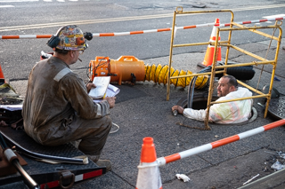
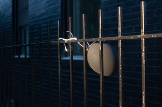
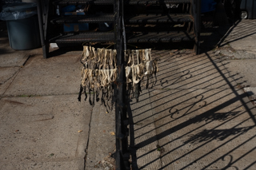
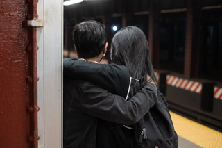

: the art or process of producing images by the action of radiant energy and especially light on a sensitive surface (such as film or an optical sensor)
Finding quiet on the streets of NYC is hard. Takes a lot of walking, a lot of looking, and a LOT of patience.
When I have my camera, it is imperative that I disappear. I want my subject to never know that I exist.
In their world, they are the only person that exists. Something that I want them to continue thinking.
Many of my favorite moments were with people that I never even spoke to.


Colors Credit:Max Maldonado
Sometimes the colors of the streets express themselves. Drawing you in to the scene.

Shadows Credit:Max Maldonado
Other times moments come out of the shadows. Revealing themselves for second before dissapearing again.

Hidden Credit:Max Maldonado
And sometimes you don't want them to reveal themselves at all. Sometimes the mystery is better than the answer.
Photography has always been my therapy. It gave me a chance to look at the world differently, to see the many facets of it through one eye. As a photograper I've spent hours alone, walking and taking in the world.
Some see it as a lonely practice. Walking for hours by yourself. However, it is no less different from a painter at a canvas or a ceramacist making a sculpture. Like Photography, these forms require a person to be alone.
It let me also know myself. To know what I like and what I am drawn towards. To notice one second where you see something incredible while others might see nothing at all. It is those little moments that I live for.
If you would like to see even more of my work you can find it on my
website.
Hi! My name is Max Maldonado and I like to take pictures. Lots of pictures.
Originally a Florida baby, I have recently traded the swamps for the concrete of New York City.
Hi! My name is Max! I enjoy long walks on the beach, talking to the demons that hide at the edge of my vision, and choclate chip cookies! Credit: Alex Maldonado